Elapidae
The family Elapidae (cobras, mambas, coral snakes, sea snakes and relatives) has 403 species in SnakeList (all venomous), in 56 genera.
- 403species
- 403venomous
- 56genera
About the family
All elapids are venomous. Their fangs are fixed at the front of the upper jaw and fairly short, unlike the folding fangs of vipers. The family includes cobras, mambas, kraits, coral snakes, death adders, taipans and the sea snakes.[1,2]
Elapids live in warm regions around the world, and Australia is their stronghold: with no vipers there, they have taken over most of the roles land snakes play elsewhere, and some lineages moved into the sea.[3]
Most elapids lay eggs - including the coral snakes, mambas, kraits and almost all cobras - but the true sea snakes and many Australian species give birth to live young.[4,3]
Sources for this introduction
- Elapidae. Wikipedia.
- Elapidae. New World Encyclopedia.
- Research thesis on the evolution of Australian elapids and sea snakes. University of Melbourne (Minerva Access).
- Cobras, Kraits, Seasnakes, Death Adders, and Relatives (Elapidae). Grzimek's Animal Life Encyclopedia, via Encyclopedia.com.
Information last reviewed 9 November 2026.
Species
Showing 403 species
 African CobraNaja pallida
African CobraNaja pallida African Garter SnakeElapsoidea sundevallii
African Garter SnakeElapsoidea sundevallii African Tree CobraPseudohaje goldii
African Tree CobraPseudohaje goldii Allen's Coral SnakeMicrurus alleni
Allen's Coral SnakeMicrurus alleni Amazon Coral SnakeMicrurus spixii
Amazon Coral SnakeMicrurus spixii Anchieta's CobraNaja anchietae
Anchieta's CobraNaja anchietae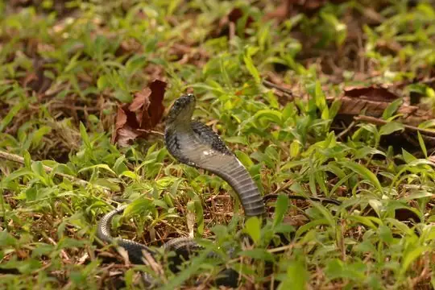
Andaman CobraNaja sagittifera Andean Blackback Coral SnakeMicrurus narduccii
Andean Blackback Coral SnakeMicrurus narduccii Angolan Garter SnakeElapsoidea semiannulata
Angolan Garter SnakeElapsoidea semiannulata Annellated Coral SnakeMicrurus annellatus
Annellated Coral SnakeMicrurus annellatus Annulated Sea SnakeHydrophis cyanocinctus
Annulated Sea SnakeHydrophis cyanocinctus- No photo yetAnomalous Sea SnakeHydrophis anomalus
 Aquatic Coral SnakeMicrurus surinamensis
Aquatic Coral SnakeMicrurus surinamensis Arabian CobraNaja arabica
Arabian CobraNaja arabica Arabian Gulf Sea SnakeHydrophis lapemoides
Arabian Gulf Sea SnakeHydrophis lapemoides- No photo yetArafura Sea SnakeAipysurus tenuis
- No photo yetArafura Smooth SeasnakeParahydrophis mertoni
 Argentinian Coral SnakeMicrurus pyrrhocryptus
Argentinian Coral SnakeMicrurus pyrrhocryptus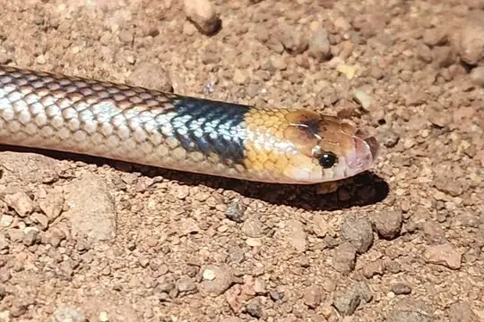
Arnhem Shovel-nosed SnakeBrachyurophis morrisi Ashe's Spitting CobraNaja ashei
Ashe's Spitting CobraNaja ashei Australian black snakePseudechis porphyriacus
Australian black snakePseudechis porphyriacus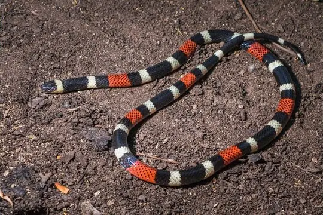
Balsas Coral SnakeMicrurus laticollaris Banded KraitBungarus fasciatus
Banded KraitBungarus fasciatus Bandy BandyVermicella annulata
Bandy BandyVermicella annulata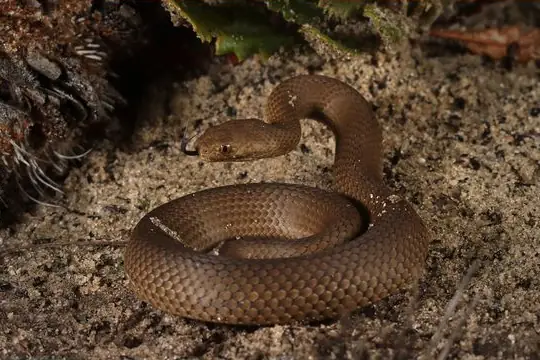
BardickEchiopsis curta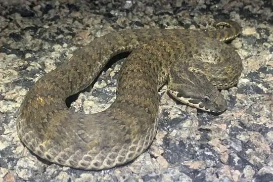
Barkly Tableland Death AdderAcanthophis hawkei Barred Coral Snake (calligaster)Hemibungarus calligaster
Barred Coral Snake (calligaster)Hemibungarus calligaster Barred Coral Snake (gemianulis)Hemibungarus gemianulis
Barred Coral Snake (gemianulis)Hemibungarus gemianulis Beddome's Coral SnakeCalliophis beddomei
Beddome's Coral SnakeCalliophis beddomei- No photo yetBelcher's Sea SnakeHydrophis belcheri
 Bibron's Coral SnakeCalliophis bibroni
Bibron's Coral SnakeCalliophis bibroni- No photo yetBighead Sea SnakeHydrophis annandalei
 Black Coral SnakeCalliophis nigrescens
Black Coral SnakeCalliophis nigrescens Black forest cobraNaja guineensis
Black forest cobraNaja guineensis- No photo yetBlack forest snakeToxicocalamus atratus
 Black Garter SnakeElapsoidea nigra
Black Garter SnakeElapsoidea nigra Black MambaDendroaspis polylepis
Black MambaDendroaspis polylepis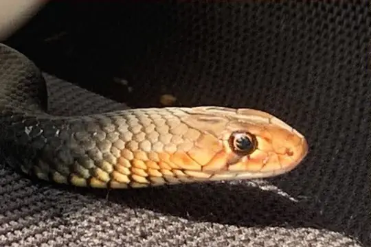
Black Whip SnakeDemansia vestigiata Black-banded Sea SnakeHydrophis nigrocinctus
Black-banded Sea SnakeHydrophis nigrocinctus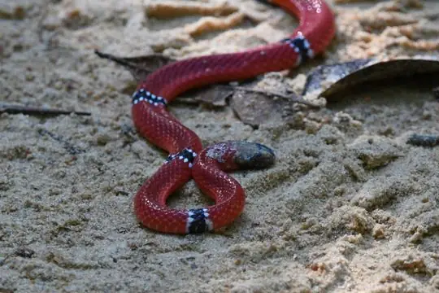
Black-headed Coral SnakeMicrurus averyi Black-headed seasnakeHydrophis atriceps
Black-headed seasnakeHydrophis atriceps Black-necked Spitting CobraNaja nigricollis
Black-necked Spitting CobraNaja nigricollis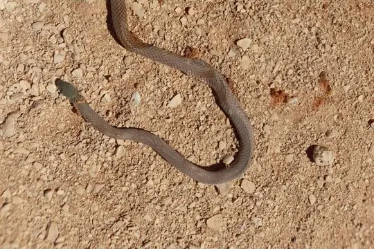
Black-necked WhipsnakeDemansia calodera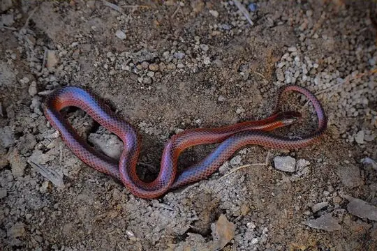
Black-striped Snake (nigrostriatus)Cryptophis nigrostriatus Blood-bellied CoralsnakeCalliophis haematoetron
Blood-bellied CoralsnakeCalliophis haematoetron Blue Coral SnakeCalliophis bivirgatus
Blue Coral SnakeCalliophis bivirgatus Blue KraitBungarus candidus
Blue KraitBungarus candidus- No photo yetBogert's Coral SnakeMicrurus bogerti
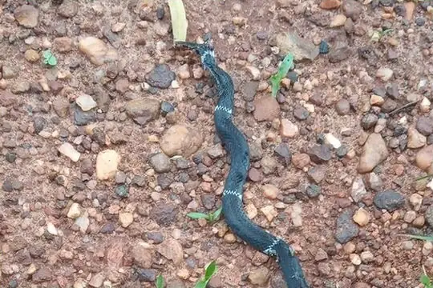
Boicora Coral SnakeMicrurus boicora- No photo yetBolivian Coral Snake (obscurus)Micrurus obscurus
 Bolivian Coral Snake (serranus)Micrurus serranus
Bolivian Coral Snake (serranus)Micrurus serranus- No photo yetBombay Sea SnakeHydrophis mamillaris
- No photo yetBougainville coral snakeParapistocalamus hedigeri
 Boulenger's Garter SnakeElapsoidea boulengeri
Boulenger's Garter SnakeElapsoidea boulengeri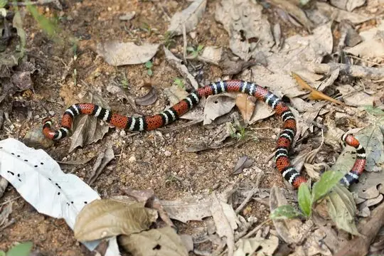
Brazilian Coral SnakeMicrurus decoratus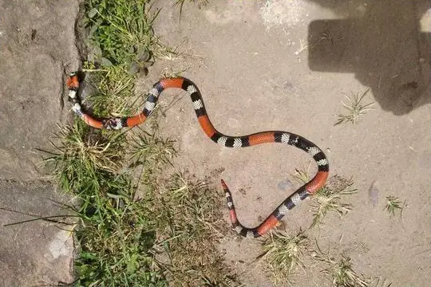
Brazilian coralsnakeMicrurus brasiliensis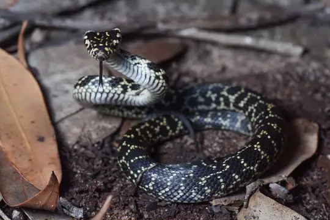
Broad-headed SnakeHoplocephalus bungaroides Broad-ringed Coral SnakeMicrurus latifasciatus
Broad-ringed Coral SnakeMicrurus latifasciatus- No photo yetBroadley's Garter SnakeElapsoidea broadleyi
 Brook's Sea SnakeHydrophis brookii
Brook's Sea SnakeHydrophis brookii Brown Forest CobraNaja subfulva
Brown Forest CobraNaja subfulva Brown's Coral SnakeMicrurus browni
Brown's Coral SnakeMicrurus browni- No photo yetBuerger's Forest SnakeToxicocalamus buergersi
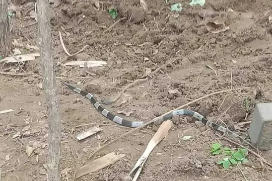
Burmese KraitBungarus magnimaculatus Bush’s Hooded SnakeSuta spectabilis
Bush’s Hooded SnakeSuta spectabilis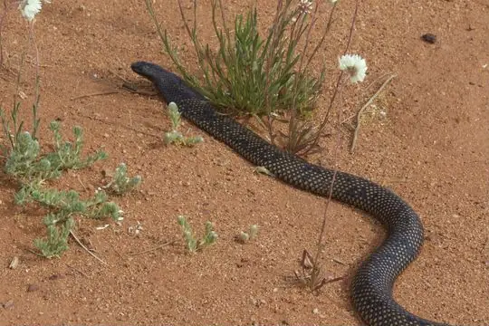
Butler's SnakePseudechis butleri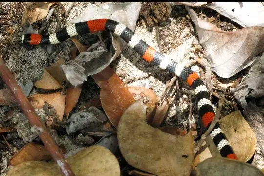
Caatinga Coral SnakeMicrurus ibiboboca Camila's CoralsnakeMicrurus camilae
Camila's CoralsnakeMicrurus camilae- No photo yetCantor's Narrow-headed Sea SnakeHydrophis cantoris
 Cape CobraNaja nivea
Cape CobraNaja nivea Capuchin coral snakeMicrurus dumerilii
Capuchin coral snakeMicrurus dumerilii Carib Coral SnakeMicrurus psyches
Carib Coral SnakeMicrurus psyches Carpentaria Whip SnakeCryptophis boschmai
Carpentaria Whip SnakeCryptophis boschmai Castoe's CoralsnakeCalliophis castoe
Castoe's CoralsnakeCalliophis castoe- No photo yetCatamayo Coral SnakeMicrurus catamayensis
 Cauca Coral SnakeMicrurus multiscutatus
Cauca Coral SnakeMicrurus multiscutatus Central American Coral SnakeMicrurus nigrocinctus
Central American Coral SnakeMicrurus nigrocinctus Central Asian CobraNaja oxiana
Central Asian CobraNaja oxiana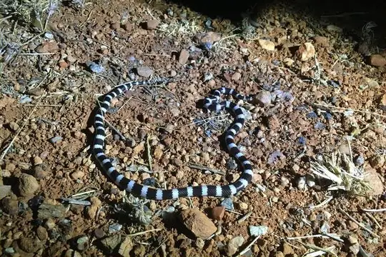
Centralian Bandy BandyVermicella vermiformis Ceylon KraitBungarus ceylonicus
Ceylon KraitBungarus ceylonicus Chinese CobraNaja atra
Chinese CobraNaja atra Chinese Sea SnakeLaticauda semifasciata
Chinese Sea SnakeLaticauda semifasciata- No photo yetChocó Coral SnakeMicrurus spurrelli
- No photo yetChristy's Water CobraNaja christyi
 Clark's Coral SnakeMicrurus clarki
Clark's Coral SnakeMicrurus clarki- No photo yetCloud Forest Coral SnakeMicrurus nebularis
- No photo yetCloudy Mountains Forest SnakeToxicocalamus pachysomus
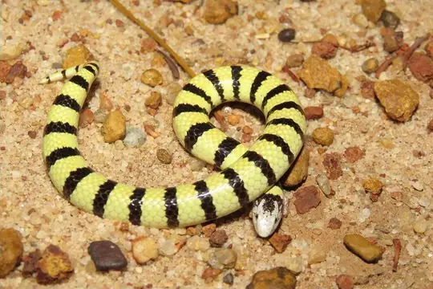
Coastal Burrowing SnakeSimoselaps littoralis Coastal TaipanOxyuranus scutellatus
Coastal TaipanOxyuranus scutellatus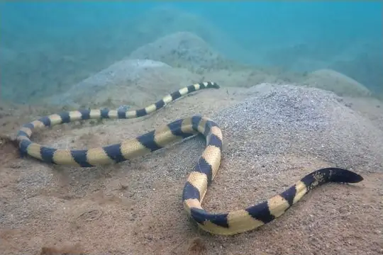
Cogger's sea snakeHydrophis coggeri- No photo yetCollared Sea SnakeHydrophis stricticollis
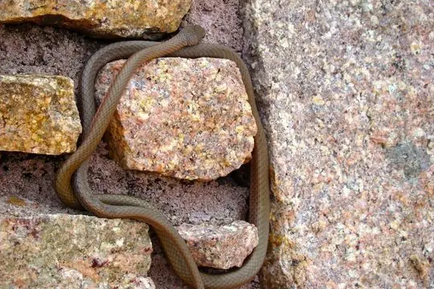
Collared Whip SnakeDemansia torquata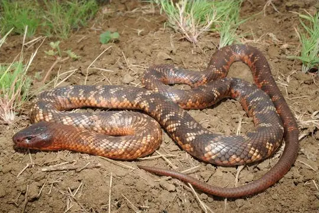
Collett's SnakePseudechis colletti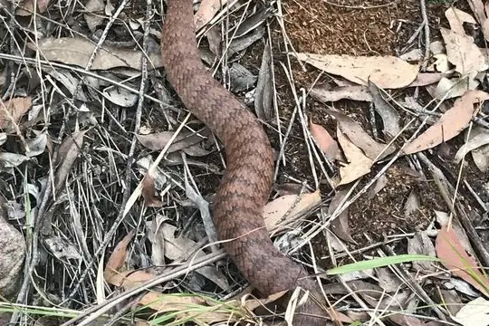
Common Death AdderAcanthophis antarcticus Common KraitBungarus caeruleus
Common KraitBungarus caeruleus Common sea kraitLaticauda laticaudata
Common sea kraitLaticauda laticaudata Common SeasnakeHydrophis schistosus
Common SeasnakeHydrophis schistosus Copperhead SnakeAustrelaps superbus
Copperhead SnakeAustrelaps superbus Coral Shield CobraAspidelaps lubricus
Coral Shield CobraAspidelaps lubricus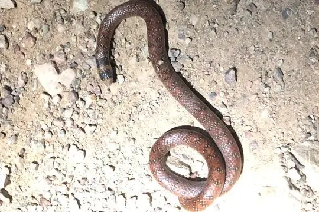
Coral SnakeBrachyurophis australis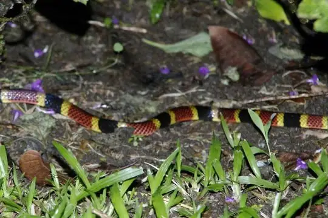
Costa Rican Coral SnakeMicrurus mosquitensis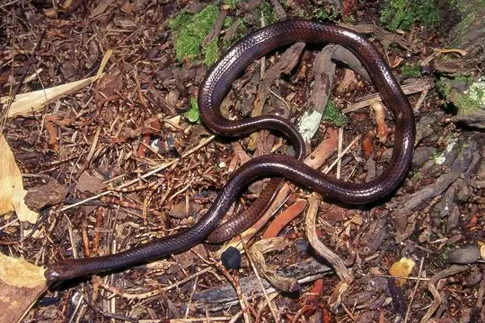
Crocker's Sea SnakeLaticauda crockeri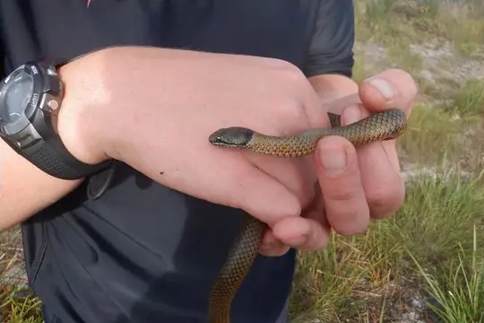
Crowned SnakeElapognathus coronatus- No photo yetDampierland Burrowing SnakeSimoselaps minimus
- No photo yetDark Blue-Banded Sea SnakePolyodontognathus caerulescens
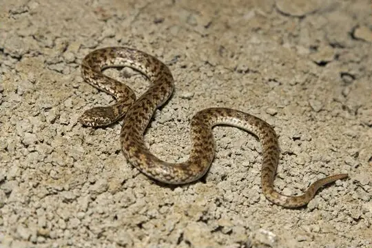
De Vis Banded SnakeDenisonia devisi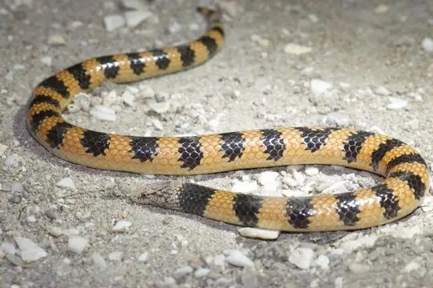
Desert Banded SnakeSimoselaps bertholdi Desert CobraWalterinnesia aegyptia
Desert CobraWalterinnesia aegyptia Desert Coral SnakeMicrurus tschudii
Desert Coral SnakeMicrurus tschudii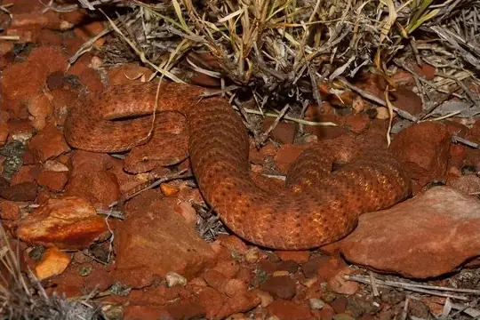
Desert Death AdderAcanthophis pyrrhus Diana's Coral SnakeMicrurus diana
Diana's Coral SnakeMicrurus diana- No photo yetDinagat Island Banded CoralsnakeCalliophis salitan
 Dubois' Sea SnakeAipysurus duboisii
Dubois' Sea SnakeAipysurus duboisii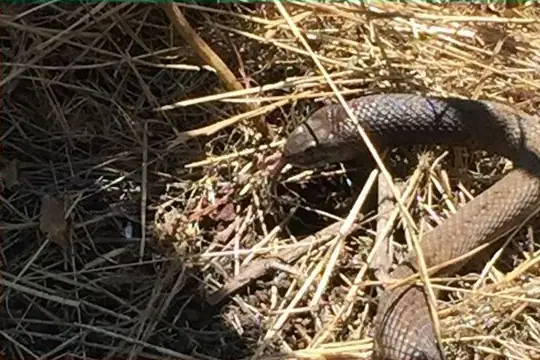
DugitePseudonaja affinis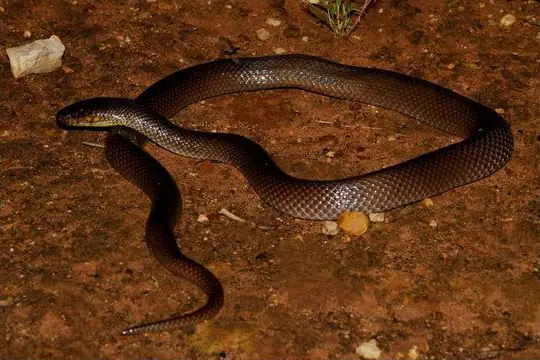
Dunmall's SnakeFurina dunmalli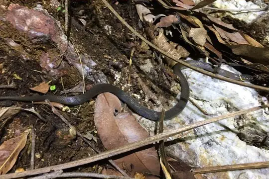
Dwarf Crowned SnakeCacophis krefftii Dwarf SeasnakeHydrophis caerulescens
Dwarf SeasnakeHydrophis caerulescens- No photo yetDwarf Water CobraNaja nana
 Eastern Brown SnakePseudonaja textilis
Eastern Brown SnakePseudonaja textilis Eastern Coral SnakeMicrurus fulvius
Eastern Coral SnakeMicrurus fulvius Ecuador Coral SnakeMicrurus bocourti
Ecuador Coral SnakeMicrurus bocourti Egg-eating Sea SnakeEmydocephalus annulatus
Egg-eating Sea SnakeEmydocephalus annulatus Egyptian CobraNaja haje
Egyptian CobraNaja haje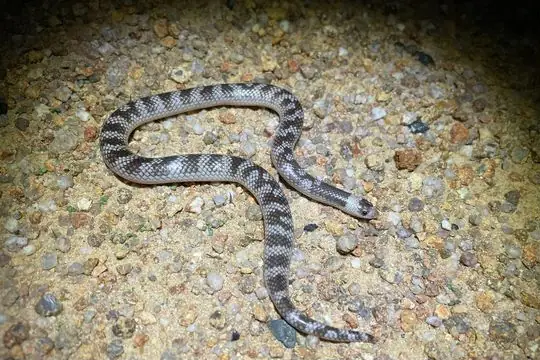
Einasleigh Shovel-nosed SnakeBrachyurophis campbelli Elegant Coral SnakeMicrurus elegans
Elegant Coral SnakeMicrurus elegans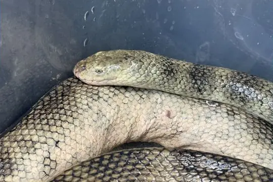
Elegant SeasnakeHydrophis elegans Equatorial Spitting CobraNaja sumatrana
Equatorial Spitting CobraNaja sumatrana- No photo yetEstuarine Sea SnakeHydrophis obscurus
- No photo yetEstuarine seasnakeHydrophis vorisi
- No photo yetFiji CobraOgmodon vitianus
- No photo yetFine-spined SeasnakeHydrophis czeblukovi
 Flat-tail Sea Snake (schistorhyncha)Laticauda schistorhyncha
Flat-tail Sea Snake (schistorhyncha)Laticauda schistorhyncha Forest CobraNaja melanoleuca
Forest CobraNaja melanoleuca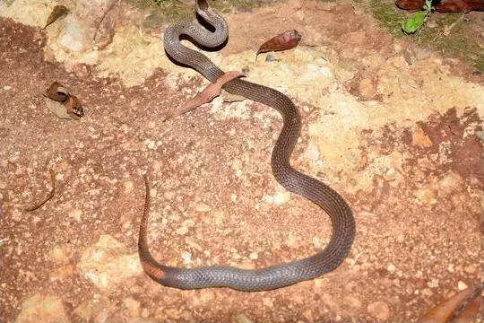
Golden Crowned SnakeCacophis squamulosus- No photo yetGoodenough Island Forest SnakeToxicocalamus goodenoughensis
 Gould's Black-headed SnakeSuta gouldii
Gould's Black-headed SnakeSuta gouldii Greater Black KraitBungarus niger
Greater Black KraitBungarus niger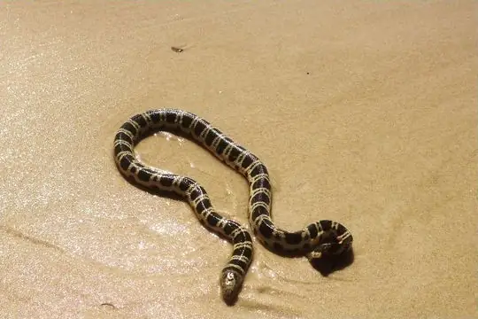
Greater SeasnakeHydrophis major Green MambaDendroaspis angusticeps
Green MambaDendroaspis angusticeps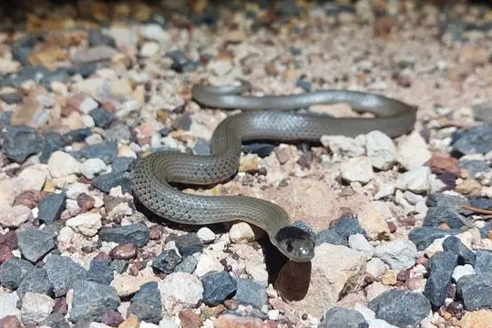
Grey SnakeHemiaspis damelii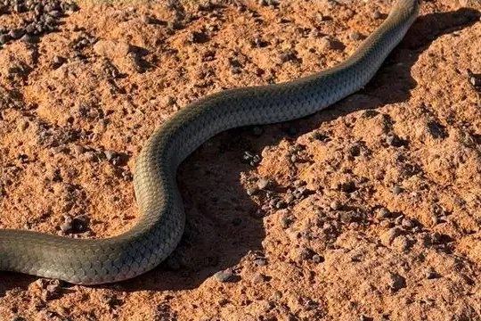
Grey WhipsnakeDemansia simplex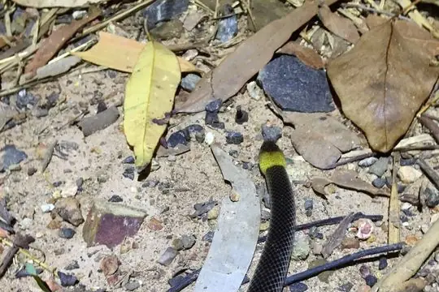
Grey-naped SnakeFurina tristis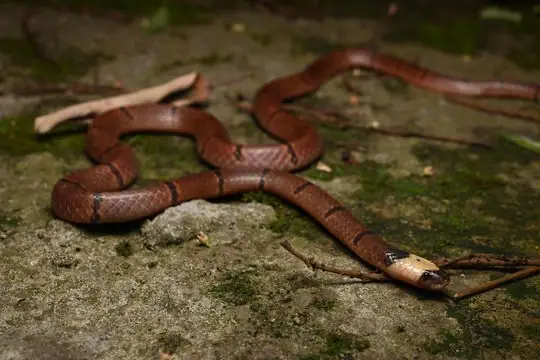
Guangxi Coral SnakeSinomicrurus peinani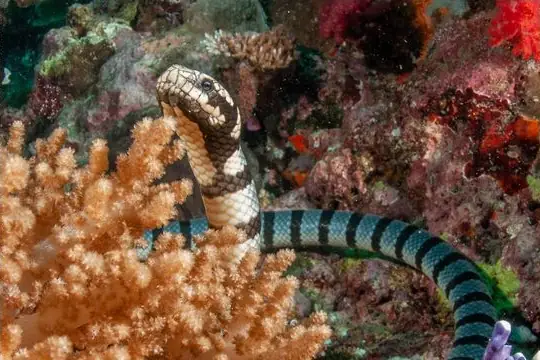
Guinea's Flat-tail Sea SnakeLaticauda guineai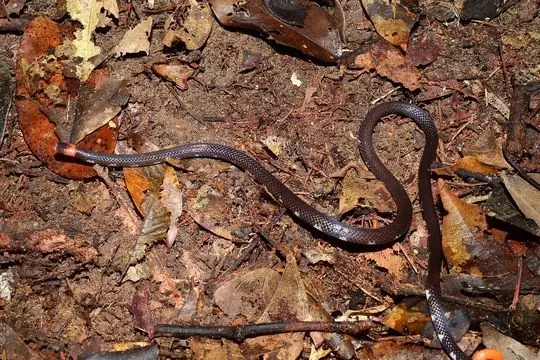
Guyana Blackback Coral SnakeMicrurus collaris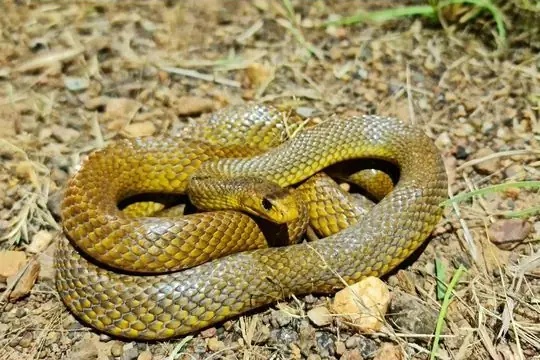
Gwardar (nuchalis)Pseudonaja nuchalis- No photo yetGünther's sea snakeMicrocephalophis cantoris
 Günther’s Garter SnakeElapsoidea guentherii
Günther’s Garter SnakeElapsoidea guentherii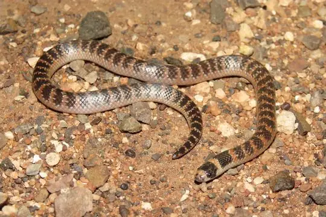
Half-girdled SnakeBrachyurophis semifasciatus- No photo yetHardwicke's Spine-bellied SeasnakeHydrophis hardwickii
- No photo yetHatori's Coral SnakeSinomicrurus hatori
 Hemprich's Coral SnakeMicrurus hemprichii
Hemprich's Coral SnakeMicrurus hemprichii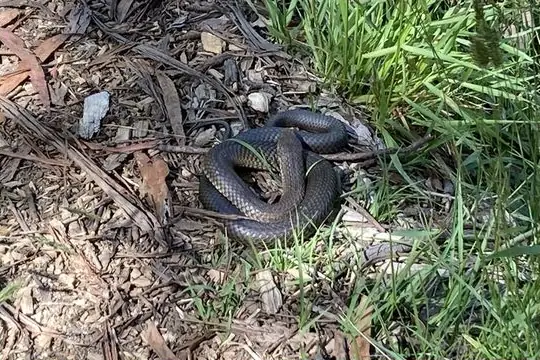
Highlands CopperheadAustrelaps ramsayi Hoodless CobraPseudohaje nigra
Hoodless CobraPseudohaje nigra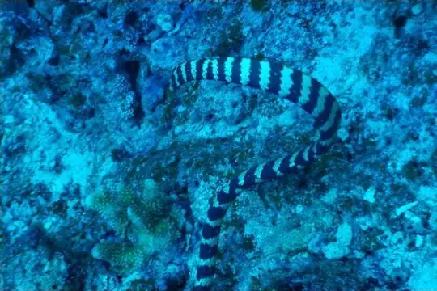
Ijima's sea snakeEmydocephalus ijimae- No photo yetIkaheka SnakeMicropechis ikaheka
 Indian CobraNaja naja
Indian CobraNaja naja Indian Coral SnakeCalliophis melanurus
Indian Coral SnakeCalliophis melanurus Indo-chinese Spitting CobraNaja siamensis
Indo-chinese Spitting CobraNaja siamensis Indonesian CobraNaja sputatrix
Indonesian CobraNaja sputatrix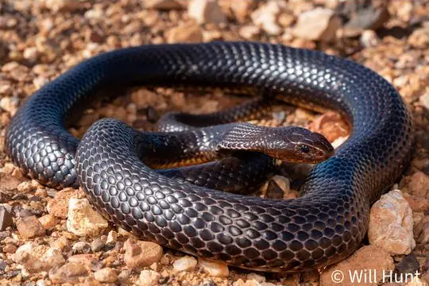
Ingram's Brown SnakePseudonaja ingrami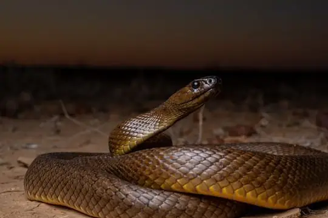
Inland TaipanOxyuranus microlepidotus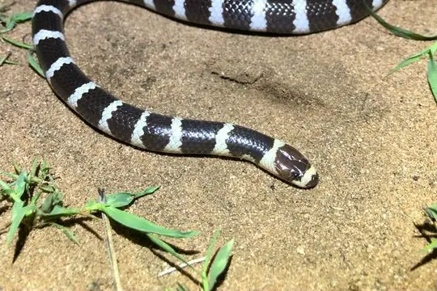
Intermediate Bandy BandyVermicella intermedia Jameson's MambaDendroaspis jamesoni
Jameson's MambaDendroaspis jamesoni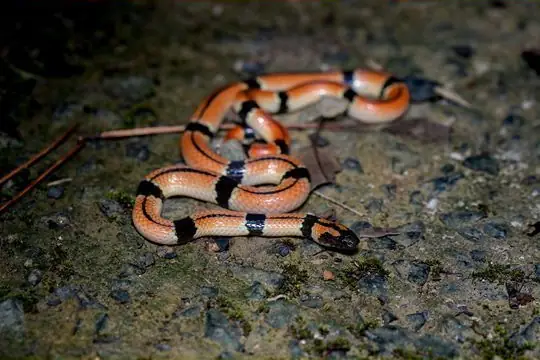
Japanese Coral SnakeSinomicrurus japonicus- No photo yetJerdon's Sea SnakeHydrophis jerdonii
- No photo yetKalimantan Sea SnakeHydrophis sibauensis
 Kellog's Coral SnakeSinomicrurus kelloggi
Kellog's Coral SnakeSinomicrurus kelloggi- Kimberley Death AdderAcanthophis cryptamydros
 King CobraOphiophagus hannah
King CobraOphiophagus hannah- King's SeasnakeHydrophis kingii
- No photo yetKloss' Sea SnakeHydrophis klossi
- No photo yetLaboute's Sea SnakeHydrophis laboutei
- Lake Cronin SnakeParoplocephalus atriceps
 Lake Taal SnakeHydrophis semperi
Lake Taal SnakeHydrophis semperi Lambert's Sea SnakeHydrophis lamberti
Lambert's Sea SnakeHydrophis lamberti Langsdorff's Coral SnakeMicrurus langsdorffi
Langsdorff's Coral SnakeMicrurus langsdorffi- No photo yetLeaf-scaled SeasnakeAipysurus foliosquama
 Lesser Black KraitBungarus lividus
Lesser Black KraitBungarus lividus- No photo yetLong-tailed WhipsnakeDemansia flagellatio
- No photo yetLoria Forest SnakeToxicocalamus loriae
 Loveridge's Garter SnakeElapsoidea loveridgei
Loveridge's Garter SnakeElapsoidea loveridgei MacLelland's Coral SnakeSinomicrurus macclellandi
MacLelland's Coral SnakeSinomicrurus macclellandi Mainland Tiger SnakeNotechis scutatus
Mainland Tiger SnakeNotechis scutatus Mali CobraNaja katiensis
Mali CobraNaja katiensis Mallee Black-backed SnakeSuta nigriceps
Mallee Black-backed SnakeSuta nigriceps- No photo yetManagalas Plateau SnakeToxicocalamus pumehanae
- Mandalay CobraNaja mandalayensis
 Many-banded Coral SnakeMicrurus multifasciatus
Many-banded Coral SnakeMicrurus multifasciatus Many-banded KraitBungarus multicinctus
Many-banded KraitBungarus multicinctus- No photo yetMany-banded SnakeNaja multifasciata
- Marbled Sea SnakeAipysurus eydouxii
- Marsh Snake (signata)Hemiaspis signata
- Masters' SnakeDrysdalia mastersii
 Mayan Coral SnakeMicrurus hippocrepis
Mayan Coral SnakeMicrurus hippocrepis McClung's Philippine Coral SnakeHemibungarus mcclungi
McClung's Philippine Coral SnakeHemibungarus mcclungi- McDowell's SeasnakeHydrophis macdowelli
 Medem's CoralsnakeMicrurus medemi
Medem's CoralsnakeMicrurus medemi Mengden's GwardarPseudonaja mengdeni
Mengden's GwardarPseudonaja mengdeni Merida Coral SnakeMicrurus meridensis
Merida Coral SnakeMicrurus meridensis Mertens' Coral SnakeMicrurus mertensi
Mertens' Coral SnakeMicrurus mertensi Mesopotamian coral snakeMicrurus baliocoryphus
Mesopotamian coral snakeMicrurus baliocoryphus- No photo yetMisima Island Forest SnakeToxicocalamus misimae
 Monk SnakeSuta monachus
Monk SnakeSuta monachus Monocled CobraNaja kaouthia
Monocled CobraNaja kaouthia- Mosiac Sea SnakeAipysurus mosaicus
- No photo yetMount Lamington forest snakeToxicocalamus lamingtoni
 Mozambique Spitting CobraNaja mossambica
Mozambique Spitting CobraNaja mossambica- No photo yetMt Rossel Forest SnakeToxicocalamus holopelturus
- No photo yetMt Simpson Forest SnakeToxicocalamus mattisoni
 Mulga SnakePseudechis australis
Mulga SnakePseudechis australis- Muller's Snake (bicolor)Rhinoplocephalus bicolor
- Mustard-bellied SnakeDrysdalia rhodogaster
 Myal SnakeSuta suta
Myal SnakeSuta suta Müller's Crown SnakeAspidomorphus muelleri
Müller's Crown SnakeAspidomorphus muelleri- Narrow-banded Burrowing SnakeBrachyurophis fasciolatus
- Narrow-headed WhipsnakeDemansia angusticeps
 Natterer's Coral SnakeMicrurus nattereri
Natterer's Coral SnakeMicrurus nattereri- Nayarit Coral SnakeMicrurus proximans
- No photo yetNeblina coralsnakeMicrurus remotus
- North-western Mangrove SeasnakeEphalophis greyae
- North-western Shovel-nosed SnakeBrachyurophis approximans
 Northeastern Hill KraitBungarus bungaroides
Northeastern Hill KraitBungarus bungaroides- Northern Bandy BandyVermicella multifasciata
- Northern Death AdderAcanthophis praelongus
- Northern Desert Banded SnakeSimoselaps anomalus
- Northern Dward-crowned SnakeCacophis churchilli
- Northern Shovel-nosed SnakeBrachyurophis roperi
 Nubian Spitting CobraNaja nubiae
Nubian Spitting CobraNaja nubiae- Oaxacan Coral SnakeMicrurus ephippifer
 Olive Sea SnakeAipysurus laevis
Olive Sea SnakeAipysurus laevis- Olive WhipsnakeDemansia olivacea
- Orange-naped SnakeFurina ornata
- No photo yetOrd Curl SnakeSuta ordensis
- Oriental Coral SnakeSinomicrurus sauteri
- Ornamental SnakeDenisonia maculata
 Ornate CoralsnakeMicrurus ornatissimus
Ornate CoralsnakeMicrurus ornatissimus Ornate Sea SnakeHydrophis ornatus
Ornate Sea SnakeHydrophis ornatus Owen Stanley Range Forest SnakeToxicocalamus stanleyanus
Owen Stanley Range Forest SnakeToxicocalamus stanleyanus- No photo yetPacaraima coral snakeMicrurus pacaraimae
 Pacific seasnakeHydrophis pacificus
Pacific seasnakeHydrophis pacificus Painted Coral SnakeMicrurus corallinus
Painted Coral SnakeMicrurus corallinus- Pale-headed SnakeHoplocephalus bitorquatus
- Panamenian Coral SnakeMicrurus stewarti
 Pantanal Coral SnakeMicrurus tricolor
Pantanal Coral SnakeMicrurus tricolor- Papuan BlacksnakePseudechis papuanus
 Papuan Death AdderAcanthophis rugosus
Papuan Death AdderAcanthophis rugosus- Papuan Whip SnakeDemansia papuensis
- Pará Coral SnakeMicrurus paraensis
- Peninsula Brown SnakePseudonaja inframacula
- No photo yetPersian KraitBungarus persicus
 Peru Coral SnakeMicrurus peruvianus
Peru Coral SnakeMicrurus peruvianus- No photo yetPeters' Coral SnakeMicrurus petersi
- No photo yetPeters' Sea SnakeHydrophis bituberculatus
 Philippine CobraNaja philippinensis
Philippine CobraNaja philippinensis Philippine Coral SnakeCalliophis philippinus
Philippine Coral SnakeCalliophis philippinus Pigmy Black-backed CoralsnakeMicrurus scutiventris
Pigmy Black-backed CoralsnakeMicrurus scutiventris- Pilbara Bandy BandyVermicella snelli
 Pilbara Hooded SnakeSuta gaikhorstorum
Pilbara Hooded SnakeSuta gaikhorstorum- Pink SnakeCryptophis incredibilis
- No photo yetPlain SeasnakeHydrophis inornatus
 Port Darwin seasnakeHydrelaps darwiniensis
Port Darwin seasnakeHydrelaps darwiniensis- Potyguara Coral SnakeMicrurus potyguara
- No photo yetPreuss's Forest SnakeToxicocalamus preussi
 Putumayo Coral SnakeMicrurus putumayensis
Putumayo Coral SnakeMicrurus putumayensis- Pygmy CopperheadAustrelaps labialis
 Pygmy Coral SnakeMicrurus dissoleucus
Pygmy Coral SnakeMicrurus dissoleucus- Pygmy Mulga SnakePseudechis weigeli
- No photo yetRangoon Sea SnakeHydrophis hendersoni
 Red River KraitBungarus slowinskii
Red River KraitBungarus slowinskii Red-headed KraitBungarus flaviceps
Red-headed KraitBungarus flaviceps- Red-naped SnakeFurina diadema
 Redtail Coral SnakeMicrurus mipartitus
Redtail Coral SnakeMicrurus mipartitus Regal Coral SnakeMicrurus ancoralis
Regal Coral SnakeMicrurus ancoralis- Ringed Brown SnakePseudonaja modesta
- No photo yetRinged Slender CoralsnakeMicrurus renjifoi
 Ringed Water CobraNaja annulata
Ringed Water CobraNaja annulata RinghalsHemachatus haemachatus
RinghalsHemachatus haemachatus Roatan Coral SnakeMicrurus ruatanus
Roatan Coral SnakeMicrurus ruatanus- Robust Burrowing SnakeAntaioserpens albiceps
- No photo yetRobust SeasnakeHydrophis melanosoma
 Rosen's SnakeSuta fasciata
Rosen's SnakeSuta fasciata- Rough Scaled Sea SnakeHydrophis donaldi
- Rough-scaled SnakeTropidechis carinatus
- Rufous WhipsnakeDemansia rufescens
- No photo yetSaddled Coral SnakeMicrurus bernadi
- No photo yetSahul Reef SnakeAipysurus apraefrontalis
 Samar CobraNaja samarensis
Samar CobraNaja samarensis Santander Coral SnakeMicrurus sangilensis
Santander Coral SnakeMicrurus sangilensis Schlegel's Crown SnakeAspidomorphus schlegelii
Schlegel's Crown SnakeAspidomorphus schlegelii- No photo yetSenegalese CobraNaja senegalensis
- No photo yetSepik Beaked SeasnakeHydrophis zweifeli
- No photo yetSetekwa River Forest SnakeToxicocalamus grandis
- Shark Bay SeasnakeAipysurus pooleorum
- Shine's WhipsnakeDemansia shinei
 Short Sea SnakeHydrophis curtus
Short Sea SnakeHydrophis curtus- Short-nosed SnakeElapognathus minor
 Silvia coralsnakeMicrurus silviae
Silvia coralsnakeMicrurus silviae Sind KraitBungarus sindanus
Sind KraitBungarus sindanus Slender Coral SnakeMicrurus filiformis
Slender Coral SnakeMicrurus filiformis- No photo yetSlender SeasnakeHydrophis gracilis
- Slender-necked SeasnakeHydrophis melanocephalus
 Small-eyed SnakeCryptophis nigrescens
Small-eyed SnakeCryptophis nigrescens- No photo yetSmith's Small-headed Sea SnakeHydrophis parviceps
 Smooth-scaled Death AdderAcanthophis laevis
Smooth-scaled Death AdderAcanthophis laevis Snouted CobraNaja annulifera
Snouted CobraNaja annulifera- Soil-crack WhipsnakeDemansia rimicola
- Solomon's Small-eyed SnakeLoveridgelaps elapoides
- Solomons Coral SnakeSalomonelaps par
- No photo yetSomali Garter SnakeElapsoidea chelazziorum
- Sombre WhipsnakeDemansia quaesitor
 Sonoran CoralsnakeMicruroides euryxanthus
Sonoran CoralsnakeMicruroides euryxanthus South American Coral SnakeMicrurus lemniscatus
South American Coral SnakeMicrurus lemniscatus- South Andaman KraitBungarus andamanensis
 Southern Coral SnakeMicrurus frontalis
Southern Coral SnakeMicrurus frontalis Speckled Coral Snake (maculiceps)Calliophis maculiceps
Speckled Coral Snake (maculiceps)Calliophis maculiceps- No photo yetSpeckled Coral Snake (margaritiferus)Micrurus margaritiferus
 Speckled Shield CobraAspidelaps scutatus
Speckled Shield CobraAspidelaps scutatus Spiny-headed SeasnakeHydrophis peronii
Spiny-headed SeasnakeHydrophis peronii- Spotted Black SnakePseudechis guttatus
- Spotted Brown SnakePseudonaja guttata
 Spotted Coral SnakeCalliophis gracilis
Spotted Coral SnakeCalliophis gracilis- No photo yetSpotted Forest SnakeToxicocalamus spilolepidotus
- Spotted Sea SnakeHydrophis ocellatus
 Spotted SnakeSuta punctata
Spotted SnakeSuta punctata- No photo yetStar Mountains Worm-Eating SnakeToxicocalamus ernstmayri
 Steindachner's Coral SnakeMicrurus steindachneri
Steindachner's Coral SnakeMicrurus steindachneri- Stephen's Banded SnakeHoplocephalus stephensii
 Stoke's SeasnakeHydrophis stokesii
Stoke's SeasnakeHydrophis stokesii- Strap-snouted Brown SnakePseudonaja aspidorhyncha
 Striped Coral Snake (intestinalis)Calliophis intestinalis
Striped Coral Snake (intestinalis)Calliophis intestinalis Striped Coral Snake (nigrotaeniatus)Calliophis nigrotaeniatus
Striped Coral Snake (nigrotaeniatus)Calliophis nigrotaeniatus Striped Crown SnakeAspidomorphus lineaticollis
Striped Crown SnakeAspidomorphus lineaticollis- No photo yetStriped forest snakeToxicocalamus vertebralis
 Striped Sea SnakeHydrophis fasciatus
Striped Sea SnakeHydrophis fasciatus- No photo yetStuart's Coral SnakeMicrurus stuarti
- No photo yetSudest Island Forest SnakeToxicocalamus mintoni
- No photo yetSulu Islands Banded Coral SnakeCalliophis suluensis
- Suzhen’s kraitBungarus suzhenae
- Swinhoe's temperate Asian coralsnakeSinomicrurus swinhoei
 São Tomé CobraNaja peroescobari
São Tomé CobraNaja peroescobari- No photo yetTambito's Coral SnakeMicrurus oligoanellatus
 Texas Coral SnakeMicrurus tener
Texas Coral SnakeMicrurus tener Tikuna coralsnakeMicrurus tikuna
Tikuna coralsnakeMicrurus tikuna- No photo yetTimor Reef SnakeAipysurus fuscus
- No photo yetTrape's Garter SnakeElapsoidea trapei
 Trinidad coralsnakeMicrurus diutius
Trinidad coralsnakeMicrurus diutius- No photo yetTrinidad Northern Coral SnakeMicrurus circinalis
- Tuxtlan Coral SnakeMicrurus limbatus
 Two-stripped Coral SnakeCalliophis bilineatus
Two-stripped Coral SnakeCalliophis bilineatus- Unbanded Shovel-nosed SnakeBrachyurophis incinctus
 Uruguayan coralsnakeMicrurus altirostris
Uruguayan coralsnakeMicrurus altirostris Variable Black-naped SnakeSuta dwyeri
Variable Black-naped SnakeSuta dwyeri Variable Coral SnakeMicrurus diastema
Variable Coral SnakeMicrurus diastema Venezuela Coral SnakeMicrurus isozonus
Venezuela Coral SnakeMicrurus isozonus Viperine Sea SnakeHydrophis viperinus
Viperine Sea SnakeHydrophis viperinus Wall's Sind KraitBungarus walli
Wall's Sind KraitBungarus walli- No photo yetWarrego Burrowing SnakeAntaioserpens warro
- Weipa Bandy BandyVermicella parscauda
 Werner's Garter SnakeElapsoidea laticincta
Werner's Garter SnakeElapsoidea laticincta West African Banded CobraNaja savannula
West African Banded CobraNaja savannula- No photo yetWest Coast Black-headed Sea SnakeHydrophis torquatus
- West Mexican Coral SnakeMicrurus distans
 Western Barred Spitting CobraNaja nigricincta
Western Barred Spitting CobraNaja nigricincta- No photo yetWestern Black-striped SnakeNeelaps calonotus
- Western Carpentaria SnakeCryptophis pallidiceps
- Western Desert TaipanOxyuranus temporalis
 Western Green MambaDendroaspis viridis
Western Green MambaDendroaspis viridis- Western Turtle-headed Sea SnakeEmydocephalus orarius
 Whip Hooded SnakeSuta flagellum
Whip Hooded SnakeSuta flagellum White-banded Coral SnakeMicrurus albicinctus
White-banded Coral SnakeMicrurus albicinctus- White-lipped SnakeDrysdalia coronoides
- White-naped SnakeCacophis harriettae
 Woodlark Island Forest SnakeToxicocalamus longissimus
Woodlark Island Forest SnakeToxicocalamus longissimus Yellow Sea SnakeHydrophis spiralis
Yellow Sea SnakeHydrophis spiralis Yellow-bellied Sea SnakeHydrophis platurus
Yellow-bellied Sea SnakeHydrophis platurus Yellow-faced Whipsnake (psammophis)Demansia psammophis
Yellow-faced Whipsnake (psammophis)Demansia psammophis- Yellow-faced Whipsnake (reticulata)Demansia reticulata
 Yellow-lipped Sea KraitLaticauda colubrina
Yellow-lipped Sea KraitLaticauda colubrina- Yellow-Lipped Sea KraitLaticauda saintgironsi
 Yellow-lipped Sea SnakeLaticauda frontalis
Yellow-lipped Sea SnakeLaticauda frontalis- Yellow-naped SnakeFurina barnardi
- Known from fossilsBungarus romulusi
- No photo yetEmydocephalus szczerbaki
- No photo yetEphalophis greyi
- No photo yetHydrophis mcdowelli
- No photo yetHydrophis pachycercos
- Known from fossilsIncongruelaps iteratus
- Known from fossilsMicrurus gallicus
- No photo yetMicrurus pachecogili
- Known from fossilsNaja antiqua
- Known from fossilsNaja austriaca
- Known from fossilsNaja iberica
- Known from fossilsNaja romani
- No photo yetNeelaps bimaculatus
- No photo yetSinomicrurus houi
- No photo yetSinomicrurus nigriventer
- No photo yetToxicocalamus buegersi
- No photo yetToxicocalamus cratermontanus
- No photo yetToxicocalamus longhagen
- No photo yetToxicocalamus nigrescens
- No photo yetToxicocalamus spilorhynchus
- No photo yetWalterinnesia morgani
No snakes in Elapidae match.
About the family Elapidae
- Genera: Micrurus 83, Hydrophis 50, Naja 37, Toxicocalamus 23, Bungarus 17, Calliophis 15, Demansia 14, Suta 11, Elapsoidea 10, Aipysurus 9, Pseudonaja 9, Sinomicrurus 9, Brachyurophis 8, Laticauda 8, Acanthophis 7, Pseudechis 7, Vermicella 6, Cryptophis 5, Furina 5, Cacophis 4, Dendroaspis 4, Emydocephalus 4, Simoselaps 4, Aspidomorphus 3, Austrelaps 3, Drysdalia 3, Hemibungarus 3, Hoplocephalus 3, Oxyuranus 3, Antaioserpens 2, Aspidelaps 2, Denisonia 2, Elapognathus 2, Ephalophis 2, Hemiaspis 2, Neelaps 2, Pseudohaje 2, Walterinnesia 2, Echiopsis 1, Hemachatus 1, Hydrelaps 1, Incongruelaps 1, Loveridgelaps 1, Microcephalophis 1, Micropechis 1, Micruroides 1, Notechis 1, Ogmodon 1, Ophiophagus 1, Parahydrophis 1, Parapistocalamus 1, Paroplocephalus 1, Polyodontognathus 1, Rhinoplocephalus 1, Salomonelaps 1, Tropidechis 1.